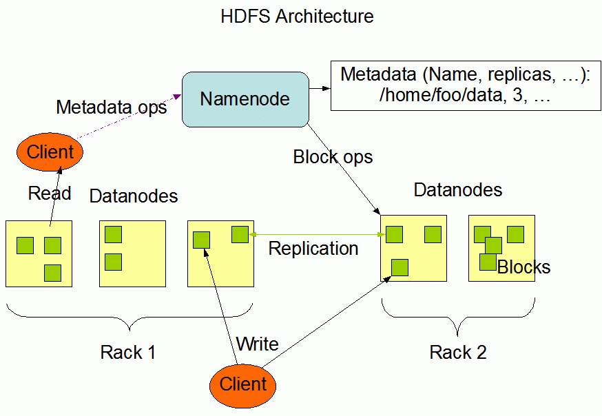

分布式基础（二十）——分布式理论之高可用：集群
在上一节分布式理论之高可用：Master-Slave中，我们介绍的主备、主从、主主模式都隐含着一个假设： 每一个节点都存储着所有数据。但是单机的存储和处理能力是有极限的，以MySQL数据库来说，单台的存储能力上限一般在500GB左右。因此，在分布式系统中，一般会用多台服务器来存储数据，每台服务器只存取总数据的一部分，这就是数据集群架构。
简单来说，集群就是多台机器组合在一起形成一个统一的系统，这里的“多台”，数量上至少是3台；相比而言，主备、主从都是2台机器。根据集群中机器承担的不同角色来划分，集群可以分为两类：数据集中集群、数据分散集群。
一、数据集中集群
数据集中集群，其本质还是Master-Slave模式，只不过是1主多备或者1主多从，数据同样都只能往主机中写。下图是读写全部到主机的一种架构：

虽然架构上是类似的，但由于集群里面的服务器数量更多，导致复杂度整体更高一些，具体体现在：
数据复制问题： 存在多条复制通道时，会增大主机复制的压力。其次，多条复制通道可能会导致多个备机之间数据不一致，需要有修正机制来对一致性进行检查和修复；
状态检测问题： 多台备机都需要对主机状态进行判断，而不同备机判断的结果可能是不同的，如何处理结果的不一致性，是一个复杂的问题；
选主问题：当有多台备机都可以升级为主机时，实际上只能允许一台备机升级为主机，那么究竟选择哪一台备机，备机之间如何协调，这也是一个复杂的问题。
对于以上问题，目前业界比较主流的解决方案就是引入分布式协调框架，比如ZooKeeper。ZooKeeper通过ZAB算法来解决上述提到的几个问题。ZAB算法，其实是Raft算法的一个变种，我们在分布式基础（四）——分布式理论之分布式一致性：Raft算法中曾介绍过Raft算法，后续在分布式进阶篇中，会深入介绍ZAB算法。
二、数据分散集群
数据分散集群，指多个服务器组成一个集群，但是每台服务器只负责存储一部分数据；同时，为了提升硬件利用率，每台服务器又会备份一部分数据。
数据分散集群中的每台服务器都可以处理读/写请求，但必须有一个角色来负责执行数据分配算法，这个角色可以是独立的一台服务器，也可以是集群自己选举出的一台服务器。
比如，Hadoop分布式文件系统（HDSF），一个HDFS集群由一个Namenode和多个Datanode组成：
- Namenode：一个中心服务器，负责管理文件系统的名字空间（namespace），以及客户端对文件的访问；
- Datanode：多个数据节点，负责处理客户端的读写请求，在Namenode的统一调度下进行数据块的创建、删除和复制操作。

HDFS暴露了文件系统的命名空间，用户能够以文件形式在上面存储数据。从内部看，一个文件其实被分成了多个数据块，这些块存储在一组Datanode上。Namenode执行文件系统的命名空间操作，比如打开、关闭、重命名文件或目录，也负责管理数据块和具体Datanode节点的映射关系。
除此之外，Redis的集群模式也是一种数据分散集群，后续进阶篇我们会详细介绍。
三、总结
数据集中集群中，客户端只能将数据写到主机；数据分散集群中，客户端可以向任意节点读/写数据。正是因为这个关键的差异，决定了两种集群的应用场景不同。
一般来说，数据集中集群适合数据量不大，集群机器数量不多的场景。例如，ZooKeeper集群，一般推荐5台机器左右，数据量是单台服务器就能够完全支撑的；
而数据分散集群，由于其良好的可伸缩性，适合业务数据量巨大、集群机器数量庞大的业务场景。例如，Hadoop集群、HBase集群，大规模的集群可以达到上百台甚至上千台服务器。